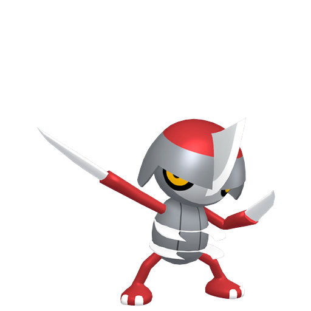
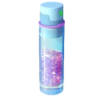

💡 Astuce : Cliquez sur un Pokémon pour afficher sa version Shiny !
Pokémon à l'honneur

Scalpion
Shiny boosté !
Bonus
• Distance d'Éclosion divisée par 4
• Taux de shiny boosté à 1/25
• Double Bonbons de Capture, et plus de chances de Bonbon L
• Les Encens durent 3h (sauf encens quotidien)
• Les Modules Leurre durent 1h, et attirent des Scalpion jusqu'à 21h
• 5 Photobombs de Scalpion
• 1 Échange Spécial supplémentaire, avec un coût réduit de 50%
• Faire évoluer Scalproie en Scalpereur nécessite de gagner un Raid de type Ténèbres ou Acier (jusqu'à 21h)
Tâches d'Étude
💡 Les valeurs indiquées correspondent aux PC du 100%.
Attrape 3 Scalpion Attrape 5 Pokémon en équipe Attrape 50 Pokémon

500 Poussières Étoile
2 Hyper Balls
Scalpion
3 Super Balls
2 Baies Nanana
Attaque Spéciale
Faire évoluer Scalproie en Scalpereur entre 14h et 21h permet d'obtenir l'Attaque Chargée suivante :
Scalpereur : Génusection
• Puissance en PvP : 75
• Puissance en Raids : 85
Ticket Payant
2€19 / Disponible dans la boutique en ligne avec 5 Hyper Balls offertes
Une Étude Spéciale avec :
• 3 rencontres avec des Scalpion avec un Fond Spécial
• Des rencontres supplémentaires avec des Scalpion
• 1 Passe Premium
• 1 Super Bonbon L
• Et bien d'autres surprises !
Recommandations du chef
Cette famille fait partie des rares familles où le Pokémon intermédiaire fait déjà partie de la liste des meilleurs Pokémon du type en question. Scalproie et Scalpereur sont déjà excellents, mais avec Génusection, Scalpereur n'en sera que meilleur !
Un Community Day à ne pas louper donc, d'autant plus que, selon moi, leur shiny est magnifique ! Que demander de plus ?